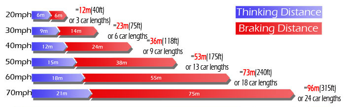

-Driving in foggy conditions can be very dangerous so be prepared to take alternative
transport or postpone your journey.
-Foggy
conditions can put a strain on the eyes as outlines become confusing. It can
become difficult to judge distances and you can become disorientated.
-Remember
that you must be travelling at a speed where you can stop within the distance
you can see to be clear. Consider how quickly a stationary vehicle or other road user could appear out of the fog.
-In
very thick fog, don’t rely on the rear lights of the car in front. This can give a false sense of security. Monitor your separation distance according to your speed and the condition of the road surface.

Remember that the stopping distances can be doubled in wet conditions and be increased by up to ten times in icy conditions.
-In very cold conditions, the dampness in the air can result in an icy road surface.
-The dampness in the air can also create condensation on the inside of the windows so be prepared to use demisters accordingly.
-Where you pass through thick and thin patches of fog, avoid the temptation to alternate your speed drastically but do use your lights accordingly. You may need to alternate between dipped lights, fog lights, and high intensity fog lights. (see below)
-Be extremely cautious of overtaking in fog.
-Where the fog isn't too thick, use your dipped beam. If your car has auto lights, they might not work in fog as light levels may still be high. Put them on manually.
-If
visibility is 100 metres (328 feet) or less, then use your high intensity rear fog lights which are legally required on all cars. They will help following vehicles
to see you. Remember to turn them off if the following vehicle comes close as
they can dazzle. For this reason, turn them off when in queued traffic.
-Many cars have front fog lights which shed a wide, low beam. Using them can improve visibility slightly when fog is very thick but only use them when necessary as they can dazzle.
-Don't use the main beam as it will dazzle other drivers and even yourself as it reflects off of the fog.
-Beware of other drivers not using their lights properly.